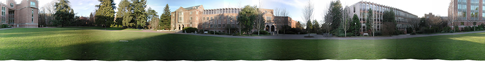
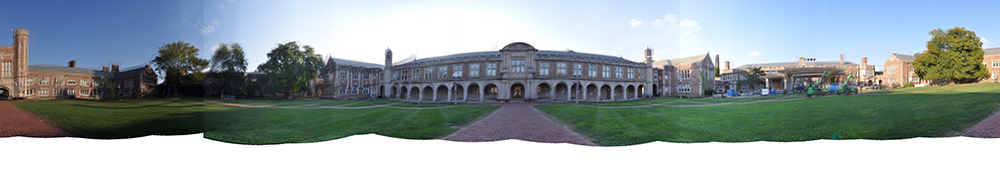

CSE 559A Project 2 Panorama Stitching
Mengyan Li
Description
In this project, I implemented panorama stiching in the following steps:
- Take a series of pictures on a tripod. I resized my pictures to 480*640.
- Warp
to spherical coordinates based on the focal length and radial
distortion. In my implementation, I didn't consider the distortion so I
set the radial distortion coefficents to 0.
- Extract features. I use the SIFT package to compute SIFT features.
- Match features between neighboring pairs.
- Align neighboring pairs using RANSAC. I set the iterations to 200 and distance threshold to 1.
- Blending all images. I used 200 for blendingWidth.
What worked well and what didn't
- I test my algorithm on campus set first(parameters from README file). The output of alignPairs
is the same as the given pairlists. I think the blending algorithm
works even better as my panorama is more seamless than the given pano
(I used 200 as blendingWidth).
- The blending edge is obvious when exposure difference exists.
- In my picture, the ghost effects result from distortion are
especially significant in the corner of the architecture because I didn't do distortion correction.
- I suppose the result might be better by increasing
RANSAC iteration number and distance threshold but I don't have time to
verify that.
Results
Test sets - campus panorama

High resolution
My pictures panorama

High resolution